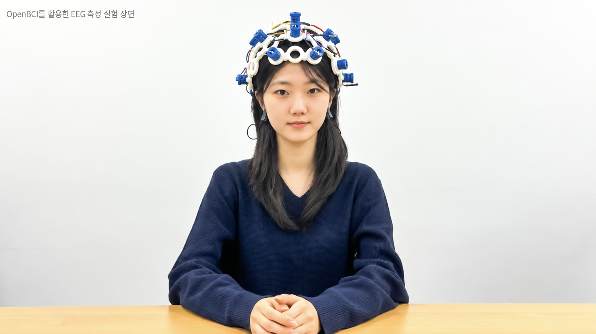
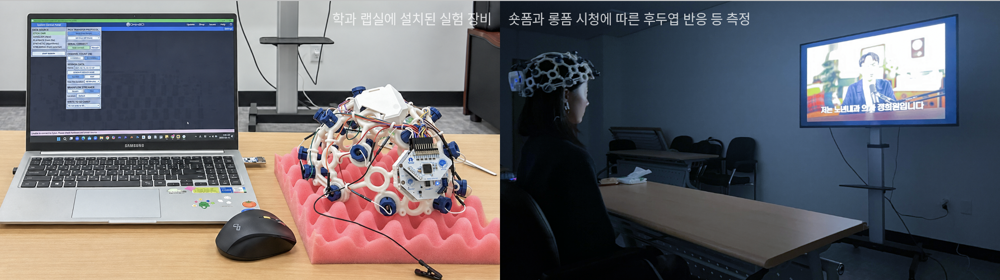
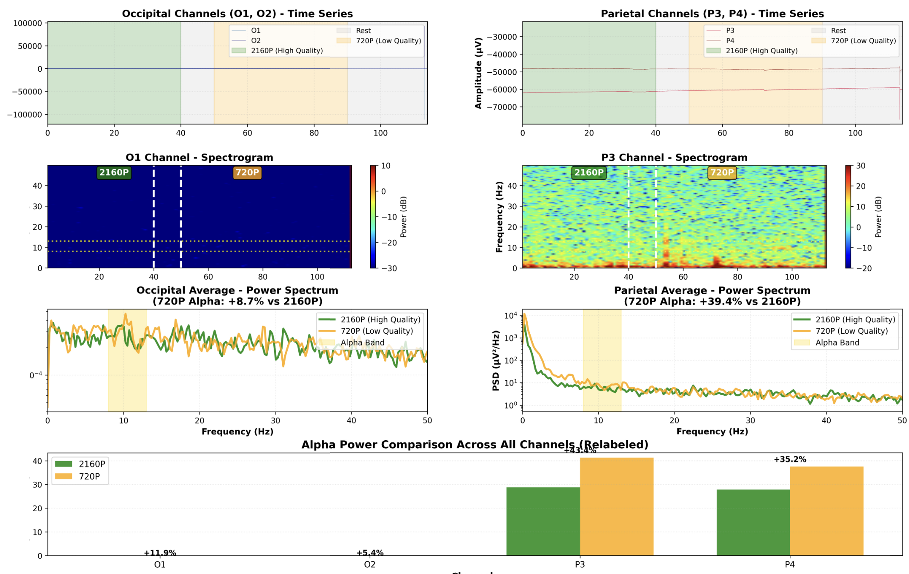

Faculty
교수 소개
서정호 교수의 프로필·논문·학술활동·저서·연구 관심 분야입니다.
01프로필

- 가천대학교 미디어커뮤니케이션학과 교수
- 가천대학교 신문방송국 국장
- 현 국가인공지능전략위원회 자문위원(사회분과)
- 현 해양수산부 정책자문위원회 총괄위원회 위원
- 전 방송통신심의위원회 권익보호특별위원회 위원
- 전 방송언론인(YTN 공채 9기, 방송디자인 및 제작PD, CP)
02연락
03논문 22
-
Semantic Divergence in AI-Generated and Human Influencer Product Recommendations: A Computational Analysis of Dual-Agent Communication in Social Commerce 요약: 소셜 커머스에서 AI·인간 인플루언서 제품 추천 담화가 의미·구조적으로 어떻게 갈라지는지 Source Credibility·CASA 틀로 비교한다.
초록
The proliferation of generative artificial intelligence (AI) as an autonomous recommendation agent fundamentally challenges traditional paradigms of marketing communication. As AI systems increasingly mediate consumer–brand relationships, understanding how artificial agents construct persuasive discourse—distinct from human communicators—becomes critical for developing effective dual-channel marketing strategies. Grounded in Source Credibility Theory and the Computers Are Social Actors (CASA) paradigm, this study investigates the semantic and structural divergence between AI-generated product recommendations and human influencer marketing messages in social commerce contexts. Employing a mixed-methods computational approach integrating term frequency analysis, TF-IDF weighting, Latent Dirichlet Allocation (LDA) topic modeling, and BERT-based contextualized semantic embedding analysis (KR-SBERT), we examined 330 Instagram influencer posts and 541 AI-generated responses concerning inner beauty enzyme products—a hybrid category combining functional health claims with hedonic beauty appeals—in the Korean social commerce market. AI-generated responses were collected through a systematically designed query protocol with empirically grounded prompts derived from actual consumer search behaviors, and analytical robustness was verified through sensitivity analyses across multiple parameter thresholds. Our findings reveal a fundamental divergence in persuasive architecture: human influencers construct experiential narratives exhibiting message characteristics typically associated with peripheral-route cues (sensory descriptions, emotional testimonials, social context), while AI recommendations employ systematic, evidence-based discourse exhibiting message characteristics typically associated with central-route argumentation (functional mechanisms, ingredient specifications, objective criteria). Topic modeling identified four distinct thematic clusters for each source type: human discourse centers on embodied experience and relational consumption, whereas AI discourse organizes around informational utility and rational decision support. Jensen–Shannon Divergence analysis (JSD = 0.213 bits) confirmed moderate distributional divergence, while chi-square testing (χ2 = 847.23, p < 0.001) and Cramér’s V (0.312, indicating a medium-to-large effect) demonstrated statistically significant and substantively meaningful differences. These findings extend CASA theory by demonstrating that AI recommendation agents develop a characteristic “AI communication signature” distinguishable from human persuasion patterns. We propose an integrated Dual-Agent Persuasion Proposition—synthesizing CASA, ELM, and Source Credibility perspectives—suggesting that AI and human recommenders serve complementary functions across different stages of the consumer decision journey—a proposition whose predictions regarding sequential persuasive effectiveness and consumer processing routes await experimental validation. These findings carry implications for AI content strategy optimization, platform design, and emerging regulatory frameworks for AI-generated content labeling.
-
Counselor gender and scenario severity in virtual reality counseling: a neurophysiological and behavioral analysis for female university students in South Korea
요약: 한국 여대생 51명이 VR 상담(상담자 아바타 성별×시나리오 심각도)을 관찰. STAI·WEMWBS·EEG 베타로 정서·신경생리 반응의 상호작용을 검증.
-
Reconfiguring the Media-Public Discourse System After ChatGPT: Agenda-Melding and Experiential Accessibility in South Korea 요약: ChatGPT 공개를 분기점으로 한국 미디어·공중 담론 정렬 재편을 QAP/MRQAP 등으로 계량. 생성형 AI 체험 담론층을 포착한다.
초록
This study develops a computational framework for quantifying how technological disruptions are associated with shifts in media–public discourse alignment. Using the public release of ChatGPT (30 November 2022) as a temporal breakpoint, we examine whether the broad public availability of generative AI was associated with structural changes in the relationship between media agendas and online public discourse in South Korea. The framework combines PPMI-weighted semantic network construction with QAP correlation, MRQAP regression and Cohen’s q effect-size analysis, applied to 181,081 Korean-language texts encompassing media agendas (national newspapers, economic dailies, regional newspapers, and broadcast news) and public agendas (online communities) over six years (2019–2025). Results reveal that national newspapers lost their dominant agenda-setting position, with public alignment declining sharply (r: 0.678 → 0.430, Cohen’s q = 0.369, large effect), while economic papers rose from lowest to second-highest alignment (r: 0.352 → 0.567) by addressing market and industry dimensions that direct AI experience could not supply. Broadcasting emerged as the dominant structural anchor of public discourse (unique coefficient β: 0.263 → 0.569; its removal alone lowers model fit from R2 = 0.517 to 0.347), while national newspapers’ unique contribution reversed in sign. Collective media explanatory power itself remained essentially stable (R2 = 0.537 → 0.517), indicating a structural reconfiguration of which media align with public discourse rather than a wholesale weakening of media–public alignment—consistent with agenda-melding, in which publics integrate media coverage with firsthand technological experience. A residual analysis further shows that the variance media agendas leave unexplained is not noise but a structured, public-specific layer of discourse organized around the hands-on use of generative-AI tools (e.g., ChatGPT, image generation)—direct evidence of a bounded public autonomy in which public discourse is distinct from, and not reducible to, media agendas. These findings demonstrate the framework’s utility for detecting how publicly accessible AI adoption—exemplified by ChatGPT—is associated with shifts in media–public structural dynamics within discourse ecosystems and carry implications for computational social science, technology communication, and applied network analysis.
-
Optimization of Video Stimuli Parameters in EMDR Therapy Using Artificial Neural Networks for Enhanced Treatment Efficacy 요약: EMDR 영상 자극 파라미터를 인공신경망으로 최적화해 치료 효과를 높이려는 연구.
초록
Eye Movement Desensitization and Reprocessing (EMDR) was recognized by the World Health Organization in 2013 as an evidence-based therapy for post-traumatic stress disorder (PTSD) and found to be effective for depression. Since then, EMDR has evolved into a personalized treatment focusing on stabilizing the physiological and psychological processes to alleviate symptoms of depression and stress. However, optimized parameters for video stimuli, such as speed (ssp), distance (d), and size (ssz), are not yet well defined in EMDR protocols. This study addresses this gap by employing an artificial neural network (ANN) methodology based on Francine Shapiro’s Adaptive Information Processing (AIP) model. The ANN was used to determine ideal values for video stimuli parameters, developing an integrated model to enhance EMDR outcomes. Of the 2860 ANN-modeled combinations, stimulus settings of 1.8 Hz speed, 70-pixel size, and 1440-pixel distance achieved the highest Predicted Effectiveness Score (PES) of 98.7%. An EMDR field test with electroencephalography (EEG) was conducted to assess the optimized video stimuli’s efficacy. Further, 16 participants, selected from a sample of 56 meeting CES-D depression criteria, were evaluated, and the top 50 PES values were selected for further analysis. EEG results indicated a 12.31% increase in effectiveness, showing a reduction in right frontal lobe beta waves. These findings highlight the technical advancements and therapeutic potential of the proposed ANN-optimized EMDR stimuli, demonstrating statistically significant improvements over traditional methods.
-
The Impact of VR Exhibition Experiences on Presence, Interaction, Immersion, and Satisfaction: Focusing on the Experience Economy Theory (4Es) 요약: 경험경제 4Es 관점에서 VR 전시 경험이 현존감·상호작용·몰입·만족에 미치는 관계를 분석한다.
초록
This study systematically analyzes and emphasizes the importance of VR exhibition experiences, a relatively under-researched area. It examines the effects of VR exhibition experiences on presence and interaction and the influence of interaction on presence. Additionally, how these factors impact user immersion and satisfaction is explored, and the relationship between exhibition immersion and satisfaction is analyzed. Specifically, this study investigates how virtual exhibition experiences, similar to those in physical galleries, provide a sense of reality, leading to immersion in the artwork and ultimately resulting in satisfaction. The findings reveal that, among the VR exhibition experience factors, entertainment, escapism, and aesthetic experiences positively (+) affected interaction, while educational experiences negatively (−) influenced it. Furthermore, entertainment, escapism, and educational experiences positively influenced presence, whereas aesthetic experiences did not significantly impact it. Interaction significantly affected presence and positively influenced both immersion and satisfaction. Presence positively affected immersion but did not significantly affect satisfaction. Finally, immersion positively affected satisfaction. This study suggests that strategies that enhance interaction and presence are crucial in designing VR exhibition experiences. They also provide an important foundation for future research by systematically analyzing the relationships between presence, interaction, immersion, and satisfaction in VR exhibition experiences.
-
VR을 이용한 EMDR의 양측성 안구운동이 우울증 감소에 미치는 영향에 관한 연구: 모니터와 HMD를 이용한 베타파 비교 연구
초록
This study was conducted to explore the potential of a novel approach to EMDR (Eye Movement Desensitization and Reprocessing) therapy using virtual reality (VR), which is traditionally administered via monitors. To test this, the depression level of students at G University, located in Gyeonggi Province, was measured using the Center for Epidemiologic Studies Depression Scale (CES-D). Sixteen participants with CES-D scores of 25 or higher, indicating severe depression (internal consistency = .71), were included in the experiment. They participated in EMDR therapy sessions conducted using both monitors and VR. During the experiment, EEG equipment was used to observe beta wave changes in the right hemisphere. The data were analyzed using paired sample t-tests with SPSS 27. The results showed that EMDR therapy using a VR HMD (M=4.67) had lower beta wave scores compared to traditional monitor-based EMDR therapy (M=5.60), confirming the new potential of VR-based EMDR therapy.
-
The Impact of Digital Storytelling on Presence, Immersion, Enjoyment, and Continued Usage Intention in VR-Based Museum Exhibitions 요약: VR 전시에서 디지털 스토리텔링이 현존감·몰입·즐거움·지속이용의도에 미치는 구조적 영향을 다룬다.
초록
Recent advancements in virtual reality (VR) technology have introduced a new paradigm in exhibition culture, with digital storytelling emerging as a crucial component supporting this transformation. Particularly in virtual exhibitions, digital storytelling serves as a key medium for enhancing user experience and maximizing immersion, thereby fostering continuous usage intention. However, systematic research on the structural influence of VR-based digital storytelling on user experience remains insufficient. To address this research gap, this study examines the impact of key components of digital storytelling in VR—namely, interest, emotion, and educational value—on presence, immersion, enjoyment, and continuous usage intention through path analysis. The results indicate that interest, emotion, and educational value all have a significant positive effect on presence. Furthermore, while interest and emotion positively influence immersion, educational value does not show a statistically significant effect. Presence, in turn, has a positive effect on immersion, enjoyment, and continuous usage intention, while immersion also positively influences enjoyment and continuous usage intention. Finally, enjoyment was found to have a significant positive effect on continuous usage intention. This study empirically validates the effectiveness of digital storytelling in virtual exhibition environments, offering valuable academic and practical insights. Theoretically, it contributes to the field by elucidating the complex and hierarchical relationships among three core factors—interest, emotion, and educational value—and their impact on user experience. Practically, the findings provide strategic guidelines for designing virtual exhibitions that maximize user immersion and satisfaction, reaffirming the importance of storytelling content that emphasizes interest and emotion.
-
Kim Yo-jong’s Strategic Rhetoric: A Semantic Network Analysis of North Korea’s Diplomatic and Strategic Communication
요약: 김여정 담화 52건(2020.3–2024.11)의 의미 연결망으로 대미·대남 외교·전략 커뮤니케이션 수사의 전환을 지도화한다.
-
Balancing Affective Engagement and Cognitive Load in Generative-AI-Based Learning: Empathy, Immersion, and Emotional Design in Design Education 요약: GenAI 기반 디자인 교육에서 Educational·Entertainment·Aesthetic 경험이 공감·몰입·만족·학습성과에 미치는 영향을 검증한다.
초록
As higher education undergoes rapid transformation driven by Artificial Intelligence (AI), the integration of Generative AI (GenAI) has become essential for preparing future-ready creative professionals. In this context, design education plays a leading role in exploring how GenAI can enhance students’ experiential learning. This study empirically examined how three experience dimensions—Educational, Entertainment, and Aesthetic—shape Empathy, Immersion, Satisfaction, and Learning Outcomes in a GenAI-based self-character workshop. A total of 185 design students participated, and the data were analyzed using Structural Equation Modeling (SEM). The results revealed that both Entertainment (β = 0.334, p < 0.001) and Aesthetic (β = 0.434, p < 0.001) experiences significantly and positively predicted Empathy and also increased Immersion (β = 0.215, p < 0.001; β = 0.154, p < 0.05). In contrast, Educational experience showed a non-significant or slightly negative effect. Furthermore, Empathy enhanced Immersion (β = 0.220, p < 0.01), Satisfaction (β = 0.173, p < 0.05), and Learning Outcomes (β = 0.305, p < 0.001). Immersion also improved Learning Outcomes (β = 0.253, p < 0.05) but slightly reduced short-term Satisfaction (β = −0.186, p < 0.05), indicating a cognitive-load trade-off between concentration and immediate enjoyment. These findings demonstrate that GenAI-based creative activities can effectively foster both emotional engagement and learning performance when instructional design minimizes unnecessary cognitive burden. The study contributes to understanding how emotionally meaningful and aesthetically engaging experiences can advance AI-integrated design education in the digital transformation era.
-
남북한 공영방송국의 ‘날씨방송’ 영상 비교·분석 : KBS와 조선중앙TV의 날씨방송을 중심으로 요약: KBS 9시 뉴스와 조선중앙TV 8시 뉴스의 지난 1년 날씨방송을 영상구성과 의미연결망으로 비교한다. 한국 방송은 약 3배 짧고 ‘기온·서울’과 대기질이 중심이며, 북한 방송은 더 길고 ‘지역·기온’과 지자기(순환기 질환) 건강정보가 중심이다.
초록
본 연구는 남북한 공영방송국의 날씨방송 영상을 비교·분석하기 위한 연구이다. 이를 위하여 먼저 날씨방송을 이론적으로 고찰하고, 지난 1년 간 우리나라 공영방송인 KBS 뉴스의 날씨방송과 북한 공영방송인 조선중앙TV 뉴스의 날씨방송을 연구 대상으로 삼아, 영상구성과 의미연결망분석을 실시하였다. 결과는 다음과 같았다. 첫째, 우리나라 날씨방송은 북한 날씨방송에 비하여 약 3배 정도 짧게 구성되었다. 둘째, 우리나라 날씨방송은 ‘기온’, ‘서울’ 등이 의미연결망의 중심부에 있었고, 북한 날씨방송은 ‘지역’, ‘기온’이 의미연결망 중심부에 있었다. 셋째, 우리나라 날씨방송이 전달하는 날씨 건강주의 정보는 ‘대기질’이었고, 북한은 ‘지자기’로 분석되었다. 이를 통하여 우리나라 날씨방송은 그 길이가 짧고 주요도시를 중심으로 한 빠른 전개가 특징이었던 반면, 북한 날씨방송은 그 길이가 길고 지역을 중심으로 한 느린 전개가 특징이었다. 또한 건강주의 정보로 우리나라는 미세먼지 등 대기질 정보를 건강주의 정보로 전달하는 반면, 북한은 협심증, 고혈압 등 순환기질병 지자기 정보를 건강주의 정보로 전달하고 있었다. 끝으로 본 연구는 기후변화 및 기후위기의 시대에 들어, 한반도를 공유하고 있는 남북한 공영방송국의 날씨방송이, 향후 어떤 지점을 어떻게 교류·개선할 수 있는지 추가적인 논의체계가 필요할 수 있다는 점을 밝히며 본 연구를 마쳤다.
-
Big Data Analysis of 'VTuber' Perceptions in South Korea: Insights for the Virtual YouTuber Industry 요약: 3년치 비정형 빅데이터·텍스트 마이닝·CONCOR로 한국 VTuber 인식을 분석하고 산업 함의를 도출.
초록
The global VTuber market is experiencing rapid growth, with VTubers extending beyond mere content creators to be utilized in various fields such as social interaction, public relations, and health. VTubers have the potential to expand the existing content market and contribute to increasing economic and public value. This study aims to investigate the perception of VTubers in South Korea and to provide insights that can contribute to the global activation of the VTuber entertainment industry. For this purpose, unstructured data on VTubers from the past three years, during which interest in VTubers has significantly grown in South Korea, was collected. A total of 57,891 samples were gathered from Naver, Daum, and Google, of which 50 highly relevant data points between VTubers and users were selected for analysis. First, key terms such as ‘Broadcast’, ‘YouTube’, ‘Live’, ‘Game’, ‘Youtuber’, ‘Japan’, ‘Character’, ‘Video’, ‘Sing’, ‘Virtual’, ‘Woowakgood’, ‘Fan’, ‘Idol’, ‘Korea’, ‘Twitch’, ‘IsegyeIdol’, ‘Communication’, ‘Worldview’, ‘VTuberIndustry’, ‘Contents’, ‘AfricaTV’, ‘Nijisanji’, and ‘Streamer’ were extracted. Second, CONCOR analysis revealed four clusters: ‘Famous VTubers’, ‘Features of VTubers’, ‘VTuber Industry’, and ‘VTuber Platforms’. Based on these findings, the study offers various academic and practical implications regarding VTubers in South Korea and explores the potential for global growth in the VTuber industry.
-
User Experience Research on the Differences in Linguistic Representation of Request about Informal Language from AI Assistant 요약: AI가 반말 사용 동의를 구할 때 존댓말/반말×질문/평서문 4유형 UX를 비교. 존댓말+질문이 가장 긍정적.
초록
Background This research is focused on situations before artificial intelligence (AI) is familiar with users through a cumulative conversion. This research aims to find the most positive user experience relevant in the case of speech on a situation when AI asks the user to converse through the informal word ‘ Banmal ’ , which is a culture spoken in Korea. Methods For the test, the language was sorted not only by honorific, but also informal words based on the perspective of user experience (UX) writing. The test also divided language through question and declarative markers. The prototype was designed as four cases, which were possible to indirectly experience the request from AI, based on the four factors as above. After using the prototype, an experiment was conducted to evaluate the user experience and service factors on a 5-point Likert-type scale. Results Case A, which is based on a polite word and a question, was the most positive in the user experience. The gender difference is meaningful as a regulation effect on the experiment. In the male group, the difference between Case B, which is based on a polite word and an assertive sentence and Case C, which is constructed by an informal word and a question, had a meaningless effect on the factors of usability, trust, intimacy, and satisfaction. On the other hand, in the female group, the difference between Case D, which is based on informal word and declarative sentence and Case C, had a meaningless effect on the same factors as above. Conclusions This research asserts that the tone from AI based on an informal word and a question to the user before AI asks the user, results in the most positive experience. AI, which is a service provider from the perspective of stakeholders, is judged that the use of honorifics is possible from the perspective of users as customers will be positive for users.
-
Facial Expression Analysis of Kim Ju-ae, North Korea Kim Jong-un's Daughter, Using Artificial Intelligence (AI) Vision
요약: 2022년 공개된 김주애 보도사진을 AI 비전으로 표정 분석하며, ‘백두혈통’·극장국가적 연출의 전략적 함의를 논의.
-
메타버스(Metaverse)를 활용한 디지털 지역문화콘텐츠 디자인 제작 연구
요약: 메타버스와 문화콘텐츠의 결합으로 디지털 지역문화콘텐츠 제작 가능성을 탐구. 직지·흥덕사 디지털 복원 후 ZEPETO에 게시.
-
유튜브 동영상 편집기법의 변화가 동영상 조회 수 및 수익에 미치는 영향 연구- 방송사 뉴스채널 동영상 분석을 중심으로 - 요약: 방송사 뉴스 채널의 실험 영상과 대조 영상을 A/B 테스트로 비교한다. 썸네일 시인성(조회 2.8배), 중심인물의 이야기 기반 편집(40배 이상), 감성 편집(30배 이상)이 조회와 정(+)의 관계였고, 편집 변화를 적용한 콘텐츠의 수익은 12.9배 높았다.
초록
본 연구는 국내 방송사들의 유튜브 채널 개설에 따른 전략적 대응을 위하여, 유튜브 동영상 편집 기법 변화에 따른 조회 수 및 수익에 미치는 인과성을 실증적으로 조사·분석하는 연구이다. 이를 위하여 4가지 연구가설에 따른 연구모형을 설정하고, 뉴스 채널의 실험영상과 대조영상을 만들어 그 변화의 요인들을 양적으로 측정하고자 A/B Testing을 실시하였다. 연구결과는 첫째, 유튜브 동영상 섬네일의 시인성은 유튜브 동영상 조회 수와 정(+)의 인과관계를 가지는 것으로 나타났다. 동영상 섬네일의 시인성이 높은 영상이 그렇지 않는 영상보다 조회 수가 2.8배 높은 결과를 나타냈다. 둘째, 중심인물의 이야기 기반 동영상 편집은 유튜브 동영상 조회 수에 정(+)의 인과관계를 가지는 것으로 나타났다. 이로 인해 중심인물이 이야기의 흐름을 잡고 까닭이나 맥락을 들어 자세히 설명하는 동영상 편집기법이 그렇지 않은 동영상 편집기법 보다 조회 수가 40배 이상 높다는 결과를 확인할 수 있었다. 셋째, 감성적 동영상 편집은 유튜브 조회 수에 정(+)의 인과관계를 가지는 것으로 나타났다. 이에 따라 동영상 분위기를 감정적으로 선도하는 동영상 편집기법이 그렇지 않은 동영상 편집기법 보다 조회 수가 30배 이상 높다는 결과를 확인할 수 있었다. 넷째, 동영상 편집기법의 변화에 따른 조회 수 증가는 수익에 정(+)의 인과관계를 가지는 것으로 나타났다. 이로 인해 동영상 편집기법의 변화를 적용한 콘텐츠가 그렇지 않은 콘텐츠에 비해 수익이 12.9배 높은 것으로 나타나 그 인과성을 확인할 수 있었다. 이번 연구로 인해 그동안 암묵지 영역에 머물던 언론사들의 유튜브 동영상 편집기법의 제작방법 및 운영이 보다 객관적이고 실증적인 명시지 영역으로 옮겨갈 수 있을 것으로 판단된다.
-
유튜브를 활용한 북한의 프로파간다 이미지 변화 연구 -Echo of Truth를 중심으로- 요약: 2017년부터 운영된 유튜브 채널 Echo of Truth를 토픽랭크 알고리즘으로 분석한다. 전통 선전 이미지는 조선화에 기반한 김일성 일가의 우상성으로, 뉴미디어 전략은 풍경과 여성으로 요약되는 일상성으로 집적된다.
초록
이 연구는 유튜브 채널 ‘Echo of Truth’로 살펴본 북한의 프로파간다 이미지 변화 연구이다. 최근 여러 보도들에 따르면 북한의 프로파간다 이미지 전략이 ‘뉴미디어(유튜브)’ 활용과 ‘자연스러움(일상과 여성)’으로 변화했다고 보도되고 있다. 이에 본 연구자들은 북한의 프로파간다 이미지 변화를 연구하기 위해 프로파간다의 어원과 프로파간다 이미지를 이론적으로 고찰하고, 북한의 전통적인 선전선동 이미지 전략의 기틀이 되는 마오 쩌둥(Mao Zedong)의 ‘중국문예운동’과 김일성의 ‘조선화’ 및 그 표현방식을 살펴본 다음, 북한 ‘조선화’와 ‘우상화’의 상관관계를 살펴보고자 했다. 이를 기반으로 지난 2017년부터 운영 중인 북한의 유튜브 채널 ‘Echo of Truth’를 다각도로 조망해 ‘조선화’로 위시되었던 북한의 전통적인 프로파간다 이미지 전략과 그 차이점을 토픽랭크 알고리즘 분석을 통해 비교해 보았다. 그 결과 북한의 전통적인 프로파간다 이미지 전략은 ‘조선화’를 기반으로 한 김일성 및 그 일가의 ‘우상성(idolization)’ 이미지로 집적되는 사실을 확인할 수 있었고, 뉴미디어를 통한 새로운 프로파간다 이미지 전략은 북한의 풍경, 여성으로 요약되는 ‘일상성(everyday life)’ 이미지로 집적되는 사실을 도출할 수 있었다. 이를 통해 북한의 새로운 선동선전 이미지 전략이 뉴미디어를 활용한 자연스러운 전달로 변화했음을 양적으로 확인할 수 있었다.
-
‘트랜스미디어 스토리텔링’ 기반의방송콘텐츠 제작 과정 연구
요약: YTN 안드로메다 프로젝트를 사례로 트랜스미디어 스토리텔링 방송 제작 모형·스키마를 도출.
-
일본 ‘네오 팝’과 ‘요시토모 나라’의 연관성 연구 요약: 일본 네오 팝을 서브컬처(오타쿠)·가와이·그로테스크 세 특징으로 나누고, 1990년 이후 국내 보도 1,300여 건의 워드 클러스터링으로 요시토모 나라와의 양적 선형관계를 확인한다.
초록
이 연구는 일본 네오 팝의 대표적인 작가 요시토모 나라의 작품을 네오 팝의 발생과 함께 탐색적으로 살펴보기 위한 연구다. 본 연구의 연구자들은 이를 위해 먼저 일본 네오 팝의 탄생 배경을 살펴보았고 네오 팝의 특징을 3가지로 분류해 연구했다. 그 특징은 먼저 오타쿠로 대변되는 ‘서브 컬처’, 그리고 전후 축소 지향적이고 귀여움을 전략적으로 내세운 ‘가와이’, 끝으로 고대 일본 문화로부터 현재까지 파생되고 있는 ‘그로테스크’ 미학을 중심으로 분석했다. 다음으로 ‘요시토모 나라’와 ‘네오 팝’의 상관관계를 양적으로 살펴보기 위해 지난 1990년 1월 1일부터 현재까지 국내에 보도된 언론 기사 모두 1,300여 건을 대상을 워드 클러스터링 해서, 요시토모 나라와 네오 팝의 상관관계를 수치적으로 살펴보았다. 분석 결과 요시토모 나라와 네오 팝은 양적 선형관계가 있는 것으로 조사되었다. 다음으로 요시토모 나라의 연관 검색어 분석을 통해서 동료 ‘1965’ 작가인 무라카미 다카시의 연관성, 일본 대중문화를 이끄는 네오 팝의 대표작가 등의 단어를 빈도수와 가중치에 따라 유의미하게 도출할 수 있었다. 마지막으로 그와 같은 네오 팝의 3가지 특징을 기반으로, 요시토모 나라의 작품을 구체적으로 살펴봄으로써 일본 네오 팝의 연관성을 탐색적으로 연구하고자 했다.
-
모바일 제보 서비스의 UX·UI 개선을 통한 사용자 참여 변화 연구 요약: 언론사 뉴스 앱의 모바일 제보를 피터 모빌의 허니콤(사용성·접근성·유용성·기능성·매력성·검색성)과 사용자 여정으로 재설계한다. 개선된 UI를 적용한 뒤 제보 참여가 적용 이전보다 약 30배 늘었다.
초록
이 연구는 언론사 뉴스 앱(News APP.)의 모바일 제보 서비스를 개선하여 보다 많은 사용자들이 모바일로 제보를 참여할 수 있도록 개선하기 위한 UX(User Experience) 연구다. 본 연구는 UX 디자인의 이론적 배경을 분석하고 기존 제보 서비스의 사용성을 분석하기 위하여 피터 모빌(Peter Morville)의 허니콤 모델(honeycomb model)을 재구성하여 6가지 평가 모델인 사용성, 접근성, 유용성, 기능성, 매력성, 검색성 등으로 서베이를 구성해 그 결과를 바탕으로 사용자 여정지도, 이해관계자 모델, 시스템 지도 등을 도출하여 새로운 모바일 제보 UI를 제안하도록 했다. 그와 같은 서베이 및 분석은 사용자 중심으로 개선된 새로운 제보 UI(User Interface)로 제안·적용됨으로써 적용 이전에 비해 제보 참여의 수가 30배 가까이 증가한 수치로 나타나 사용자 중심의 UI 경험이 언론사 뉴스 앱의 모바일 제보 증가로 이어질 수 있음을 양적으로 입증했다. 이 데이터를 바탕으로 본 연구자들은 언론사 뉴스 앱의 모바일 제보 서비스 UX 분석을 통한 UI 개선의 효용성과 중요성 등을 결론으로 언급함으로써 본 연구를 마치고자 했다.
-
소셜 미디어 게임의 어두운 음모(陰謀), ‘다크 플레이’ 연구 요약: 페이스북 성격 퀴즈 앱 ThisIsYourDigitalLife가 약 8,700만 명의 개인정보를 모아 2016년 미국 대선에 오용된 과정을 미구엘 시카트의 다크 플레이와 감시자본주의로 읽는다.
초록
이 연구는 페이스북 심리검사 게임 앱 ‘ThisIsYourDigitalLife’에 나타난 어두운 음모(陰謀)인 ‘다크 플레이(Dark Play)’ 게임 속성을 살펴보기 위한 연구이다. 케임브리지대학교의 알렉산드로 코건 교수팀이 만든 ‘ThisIsYourDigitalLife’는 전 세계 페이스북 사용자 약 8,700만 명의 디지털 개인정보를 성격퀴즈 게임 방식을 활용하여 무단으로 수집한 다음, 2016년 미국 대통령선거 등에 직접 오용하여 세계적인 비난을 샀던 바 있다. 이를 바탕으로 본 연구자들은 해당 소셜 미디어 게임에 활용된 어두운 음모를 미구엘 시카트의 다크 플레이 게임 개념과 연계해 살펴봄으로써 코건 교수팀의 페이스북 서드 파티형 소셜 게임에 은닉되었던 플레이어들 사이의 협의되지 않은 모의를 어두운 음모인 다크 플레이 개념으로 설명하고자 했다. 또 페이스북 소셜 미디어 게임이 오용된 ‘다크 플레이’의 사례를 연장해 벨라미 포스터, 로버트 맥체스니, 쇼냐나 주보프의 감시자본주의 개념과 연계해 살펴봄으로써 디지털 주권 및 정보주권 보호 등에 관한 필요성을 고찰하고자 했다.
-
백남준과 매클루언의 교집합 ‘글로벌’ 개념에 관한 연구- 백남준의 ‘글로벌 그루브’와 매클루언의 ‘글로벌 빌리지’를 중심으로 - 요약: 백남준의 ‘글로벌 그루브’와 매클루언의 ‘글로벌 빌리지’를 위성 네트워크와 동영상 문법의 교집합으로 읽는다. 1984년 〈굿모닝 미스터 오웰〉을 전 세계를 잇는 비디오 공동시장의 사례로 살핀다.
초록
연구는 한 가지 흥미로운 의문으로부터 출발했다. 백남준의 ‘글로벌 그루브’와 매클루언의 ‘글로벌 빌리지’는 그 단어만큼이나 유사한 개념으로부터 나왔던 것은 아닐까? 매클루언의 첫 저작은 1962년 발행되었고, 백남준의 첫 전시는 1963년 개최되었다. 활동했던 시기가 유사했던 것만큼 두 사람 다 텔레비전이라는 동일한 매체를 다뤘다. 게다가 매클루언은 1962년 ‘글로벌 빌리지’ 개념을, 백남준은 1970년 ‘글로벌 그루브’ 개념을 적요함으로써 매체 이상의 세계화를 꿈꿨다. 한 쪽이 다른 한 쪽에게 영향을 주었던 것은 아닐까? 단서가 적었다. 그래서 백방을 뛰었다. 가깝게는 서점과 도서관 등을 탐방했다. 멀게는 백남준아트센터와 백남준의 오래된 작업동료였던 존 샌본의 육성증언을 들어보기 위해 갔다. 얻은 것은 있었다. 뉴욕공영방송인 WNET의 저널에 투고한 백남준의 칼럼에는 전 세계가 하나의 단일한 촌락으로 형성되기 위해서는 “자유무역 방식에 힘입은 비디오 정보의 유통이 활성화되어야한다”고 주장하면서 매클루언과 촌락개념, 즉 지구촌이라는 사상을 언급했던 것이다. 백남준은 전 세계를 잇는 가능성을 전자기기들을 연결시키는 위성네트워크기술로 보았고, 그 도구를 비언어적 커뮤니케이션 형식인 동영상문법으로 다루고자 했다. 그리고 그 총체는 1984년, 전 세계적 위성예술 퍼포먼스인 “굿모닝 미스터 오웰”에서 표현되었다는 것을 알게 되었다. 이 연구는 세 가지 토픽에 따라 분류해 각각의 개념을 살펴보기 위해 노력했다. 먼저 전 세계를 이을 수 있는 가능성의 증언으로서 백남준의 1984년 작, “굿모닝 미스터 오웰”을 살펴보고, 비디오 공동시장의 꿈으로서 백남준의 ‘글로벌 그루브’ 개념을 살펴보았으며, 촌락의 규모로 작아진 지구로서 매클루언의 ‘글로벌 빌리지’ 개념을 살펴보았다. 끝으로 백남준과 매클루언을 잇는 의미적 교집합으로 ‘글로벌’의 개념을 이음으로써, 유튜브와 같은 동시대의 월드 와이드 웹 기반의 동영상 플랫폼과의 관계를 후속과제로 남겨놓음으로 연구를 마치고자 했다.
-
4차 산업혁명시대, ‘스튜디오 박사학위’의 필요성에 대한 연구 요약: 4차 산업혁명기에 이론(연구)과 실기(제작)를 겸한 스튜디오 박사학위 예술가의 필요성을 변증법적 유물론, 선행연구, 20세기 심적 이미지의 재현, 인터랙티브 미디어아트로 논한다.
초록
본 논문은 4차 산업혁명의 시대를 맞이하여 예술학 박사과정인 ‘스튜디오 박사학위(doctoral degree in studio art)’ 과정의 개설이 가진 함의를 진단하고, 이론(연구)과 실기(제작)를 겸비한 ‘스튜디오 박사학위’ 예술가들의 역할과 시대적 필요성에 대해서 밝히고자 하는 것을 연구문제의 초점으로 삼았다. 이에 대한 접근을 위하여, 첫 번째는 헤겔을 따르는 마르크스·엥겔스의 ‘변증법적 유물론’에 대해서 살펴보았고, 두 번째는 ‘스튜디오 박사학위’의 선행연구인 티모시·엘킨스 등의 연구와 방향성을 알아보았으며, 세 번째는 20세기 예술가들과 그들의 심적 이미지 재현이 사회적으로 어떤 영향을 끼쳤는지 일련의 사례를 들어 확인해보았다. 끝으로 4차 산업혁명이라는 새로운 시대, 오늘날의 예술가들은 새로운 환경적·도구적 변화를 맞이하여 그들의 심적 이미지를 어떻게 아날로공(analogon)적으로 재현하고 있는지 ‘인터렉티브 미디어아트’ 분야에 한정해 살펴보았다. 따라서 본 논문의 연구자들은 모든 것이 초연결·초지능화 되는 뉴로 네트워크의 시대, ‘스튜디오 박사학위’의 예술가들이 ‘새로운 지식’(new knowledge)을 창출할 수 있는 통합의 열쇠이자 매개체가 될 수 있다는 점을 주장함으로써 연구를 마치고자 했다.
04학술활동 8
-
Built to Adapt: Relational Enablers of Dynamic Capabilities in Uncertain Environments
요약: 코로나19 팬데믹을 맥락으로 한국 산업 실무자 심층 인터뷰를 분석해, 이해관계자와의 신뢰 기반 공식·비공식 네트워크와 협력적 교환으로 이루어진 관계 자본(relational capital)이 기업의 감지·포착·재구성을 가능하게 함을 밝힌다. 이를 바탕으로 위기 속 조직 민첩성을 뒷받침하는 동적역량의 선행요인을 설명하는 개념 모형을 제안한다.
-
ChatGPT 전후 한국 언론의 의제 정렬(Agenda Alignment) 구조 변화
대한민국 · 2026 · 한국커뮤니케이션학회 2026 봄철 정기학술대회 · 2026. 6. 14. · 상명대학교 대학로캠퍼스 예술디자인센터
요약: ChatGPT 공개(2022년 11월)를 분기점으로, 6년간 인공지능 관련 한국어 텍스트 181,081건의 의미연결망을 QAP·MRQAP·Cohen's q로 비교해 언론 의제와 온라인 공중 담론의 정렬 구조 변화를 분석한다. 전국지의 공중 정렬은 낮아지고(r .678→.430) 경제지는 높아져(.352→.567), 의제설정에서 의제융합(agenda-melding)으로의 이동을 논의한다.
-
언론사의 독자 데이터 분석을 통한 사용자 경험 개선 사례와 인공지능(AI) 기반의 CMS 제작 탐색
대한민국 · 2024 · 2024 한국디자인학회 봄국제학술대회
요약: YTN 모바일 제보 서비스를 사례로 사용자 조사·FGI·사용성 설문·사용자 여정 지도를 거쳐 제보 절차 간소화, 멀티 파일·텍스트 제보, 리워드를 도입한 UX/UI 개선으로 온라인 제보가 2011년 1,221건에서 2017년 32,825건으로 늘었음을 소개한다. 아울러 AI CMS와 파인튜닝·RAG 등 생성형 AI 기반 저널리즘 현황을 짚고 AI 기반 CMS 제작 방향을 탐색한다.
-
개인 맞춤형 라이프로그 데이터를 활용한 예술과 정신건강 치료
대한민국 · 2024 · 대한디지털헬스학회 2024 춘계학술대회
요약: 코로나19 전후(2017–2019, 2022–2024) 포털·블로그·커뮤니티·뉴스 등 비정형 데이터 91,016건을 의미연결망·CONCOR로 분석해, ‘디지털 헬스’ 인식이 병원·의료·산업·스마트 중심에서 디지털·의료·바이오·인공지능 중심으로 바뀌었음을 보인다. 이어 VR HMD를 활용한 EMDR 실험에서 모니터 방식보다 우측 베타파가 낮게 나타난 ‘디지털 표현형’ 콘텐츠 연구를 소개한다.
-
소유냐 존재냐, 보도전문채널 YTN의 정체성 탐구
대한민국 · 2023 · 한국언론학회 2023 봄철 정기학술대회
요약: 지난 30년간 보도전문채널 관련 뉴스와 민영화 논의가 본격화된 최근 1년간 YTN 사내 게시판(‘소통과 화합의 광장’) 글을 텍스트 네트워크로 분석한다. YTN이 ‘뉴스전문채널’의 중심 브랜드로 자리 잡았고 그 중심에 방통위·정부가 놓여 있으며, 사내 구성원들은 ‘민영화’·‘보도’·‘공정’을 핵심 쟁점으로 삼고 있음을 확인한다.
-
A Study on Mobile APP Icon Design Based on the Hamilton’s Principle
요약: 해밀턴의 원리(최소작용 원리)에 따라 행동을 유도하는 모바일 앱 아이콘을 운동에너지(KE)·위치에너지(PE)로 구분하고 상징에너지(SE)를 새 축으로 도출해 분류한다. 게임 앱 아이콘은 플레이어 형상과 불완전한 운동에너지로 움직임을, SNS 앱 아이콘은 로고·색·형태로 기업 상징성과 완전한 위치에너지를 상징에너지로 표현한다.
-
인공지능(AI) 비전(Vision)을 활용한 보도사진 표정분석 연구
대한민국 · 2023 · 한국언론학회 2023 가을철 정기학술대회
요약: 2022년 11월~2023년 8월 로동신문·조선중앙통신에 실린 김주애 사진 95장 중 표정 분석이 가능한 40장을 Google Vertex AI Vision으로 분석한다. 기쁨(Joy)과 무표정이 5대 5, 자신감 지수가 평균 92%로 나타났으며, 이를 백두혈통·‘극장국가’ 틀에서 온화하지만 절제된 지도자 이미지를 복각하는 선전 전략으로 해석한다.
-
전자 거울이 만든 혼종적 사회 공간, 잔상과 변조 그리고 생성의 '메타버스'
대한민국 · 2023 · 2023 한국디자인학회 가을국제학술대회
요약: 카메라 이전의 회화에서 광학기술·전자 미디어로 이어지는 ‘잔상→변조→생성’의 흐름으로 시각과 기억의 확장을 짚고, 모바일 연결성이 공·사와 안·밖의 경계를 허문 ‘혼종적 사회 공간’을 거대한 전자 거울로 읽는다. 이미지가 중첩된 공간인 메타버스가 ‘디지털 자연’이라는 새로운 형성체로 떠오른다고 논한 스페셜 세션 강의다.
05저서 9
-
『K-신파와 한류의 미학 : 선택적 문화점착성과 디지털 공중』
요약: 한류가 국경을 넘어 남는 ‘문화의 중간층’(내러티브·정서 코드)을 신파(新派) 감정 양식의 계보에서 읽어, 선택적 문화점착성과 디지털 공중을 탐구한다.
-
『시각성의 계보학 : 사진의 발명에서 AI 영상까지』
요약: 미디어법 집회 현장의 ‘채증 vs 되찍기’ 장면을 출발점으로, 사진·영상·AI 영상에 이르는 시선의 충돌과 시각성의 계보를 풀어낸다.
-
『AI 영상기획 실전 워크북』 — 1인 블록버스터 시대를 준비하는 영상기획 실전 파이프라인
요약: AI 도구로 기획부터 생성·편집·마스터링·마케팅·배포까지 한 편이 완성되는 1인 영상 제작 파이프라인 실전서. 입문~중급 독학·10주 강의용 워크시트 구성.
-
『인공지능 구텐베르크 은하계』
-
『디지털 시대의 미디어 기호학』
-
『인공지능 뉴스룸의 진화 — 생성형 AI와 저널리즘의 교차점』
요약: AI를 기자 대체가 아닌 증강 도구로 보는 ‘켄타우로스 저널리즘’ 관점. 글로벌·국내 뉴스룸 AI 전환 사례와 멀티 LLM·RAG·Human-in-the-Loop 윤리·신뢰를 정리한다.
-
『미디어 시프트 2026 — 변화의 신호를 읽다』
요약: 변화의 파편이 아닌 구조를 읽는다. 생성형 AI·크리에이터·스트리밍·K-콘텐츠 IP를 ‘다이아몬드 시프트’로 묶어 2026년 미디어 지형을 해독한다.
-
『모두가 잘 살기를 선택한 나라 : 핀란드의 정치제도와 미디어 리터러시』
요약: 세계행복보고서 상위권·민주주의·교육의 배경을 정치제도와 미디어 리터러시에서 찾고, 현지 전문가 인터뷰로 시민 참여·신뢰를 조명한다.
-
『백남준 영상의 기술 미학 : 인공지능 시대의 보다 인간적인 기술 활용』
요약: 기술의 인간화를 주장한 백남준의 실험을 AI 시대에 재조명하며, 기술 혐오와 숭배를 넘는 담론을 제시한다.
06연구 과제 · 진행 중 연구
-
AI 미디어 기획·제작 진행 중
-
영상의 이해
-
숏폼 시대의 뇌: 영상 포맷이 시각적 주의집중에 미치는 영향에 대한 뇌파 분석
-
고전 영화 재개봉 온라인 담론의 예기 감정·정조 — Behavioral Sciences 투고 원고 (위만 공동연구)
07작품·활동 / 수상 경력
-
〈Neo Chungking Express 2034〉 — AI Film Awards Cannes 2026 Official Selection
-
Italy - Burano Artificial Intelligence Film Festival (Nonimee)
-
Korea - SEOUL INTERNATIONAL AI Film Festival (Winner)
-
USA - New Filmmakeers NY (Selection)
-
France - AI Film Awards Vertical Edition (Official Selection)
08연구 관심 분야
AI Media Lab
AI미디어랩은 생성형 AI가 영상의 제작 방식과 수용 방식을 어떻게 바꾸는지를 탐구하는 연구실입니다. 한편으로는 AI 영상 제작 파이프라인을 직접 설계하고 제작하며, 생성형 AI 이미지 도구 및 영상 도구를 활용하여 새로운 영상 문법을 실험하고, 다른 한편으로는 뇌파(EEG)와 생리 반응 측정을 통해 관객이 영상을 어떻게 지각하고 반응하는지를 검증합니다. 또한 랩실에서 직접 제작한 Text Mining 분석 엔진을 통해서 대규모 텍스트 및 소셜 데이터 분석을 통해 미디어 담론과 공중의제 변화를 추적합니다. 제작, 지각, 담론의 세 축을 융합으로 연결하고 리서치하는 것이 연구실의 지향점입니다.
AI 영상 파이프라인 구축 및 실 제작
AI 영상을 기획·제작하기 위한 영상 제작은 연구의 부산물이 아니라 연구의 한 축입니다. 생성형 AI가 영상 문법을 어떻게 바꾸는지는 논문으로만 규명되지 않으며, 직접 AI 영상을 만들어보는 과정에서만 드러나는 변화와 문제·개선점이 있다고 봅니다. 제작은 다중 AI 툴을 연계한 파이프라인으로 이루어지며, 각 툴의 강점과 한계를 실측으로 파악해 샷 단위로 배분하는 것이 핵심입니다. 여기서 축적된 노하우는 다시 시스템으로 환원됩니다.


텍스트 감정 분석기 EmoFEAT 개발
EmoFEAT는 텍스트에 담긴 감정을 정밀하게 측정하기 위해 개발된 연구용 웹 플랫폼입니다. 별도의 프로그래밍 없이 브라우저 환경에서 분석을 수행할 수 있으며, 댓글·리뷰·SNS 게시물과 같은 대규모 비정형 텍스트를 다루는 연구자를 위해 설계되었습니다. 긍정·부정 이분법에 머무르지 않고 RoBERTa GoEmotions 모델 기반으로 28개 감정 범주를 구분하며, TF-IDF·PPMI 의미연결망·LDA·QAP/MRQAP 등이 단일 환경에서 연계됩니다. 한국어와 영어 텍스트를 모두 지원합니다.


OpenBCI 기반 EEG 측정 환경 구축
영상 화질이 시청자의 시각적 주의에 어떤 영향을 미치는지를 뇌파로 검증하는 실험 맥락에서, 주관적 설문이 아니라 생리적 지표로 답해보자는 것이 출발점입니다. OpenBCI를 사용해 10-20 국제 전극 배치에 따라 후두엽(O1, O2)과 두정엽(P3, P4) 및 인접 채널을 중심으로 기록하며, Welch’s PSD로 파워 스펙트럼을 추정한 뒤 알파 대역(8–13Hz)의 억제(알파 블로킹)를 핵심 지표로 삼습니다. 파이프라인은 EEGLAB과 MNE를 사용하며, 단일 피험자 분석에서 다중 피험자 분석으로 단계적으로 확장합니다.





